RVG (Ruby Vector Graphics) is a facade for RMagick's Draw class that supplies a drawing API based on the Scalable Vector Graphics W3C recommendation.
RVG is a scalable vector drawing library. Scalable means that drawings are not fixed to a single size in pixels. The same drawing can be rendered for a screen display or for printing. Vector images are drawn using geometric objects like lines and circles. Unlike raster images, vector images don't get "pixelated" when you make them bigger.
As an introduction to the RVG library, let's see how to draw this little duck on the left. Here is the complete program.
1 require 'rvg/rvg'
2 include Magick
3
4 RVG::dpi = 72
5
6 rvg = RVG.new(2.5.in, 2.5.in).viewbox(0,0,250,250) do |canvas|
7 canvas.background_fill = 'white'
8
9 canvas.g.translate(100, 150).rotate(-30) do |body|
10 body.styles(:fill=>'yellow', :stroke=>'black', :stroke_width=>2)
11 body.ellipse(50, 30)
12 body.rect(45, 20, -20, -10).skewX(-35)
13 end
14
15 canvas.g.translate(130, 83) do |head|
16 head.styles(:stroke=>'black', :stroke_width=>2)
17 head.circle(30).styles(:fill=>'yellow')
18 head.circle(5, 10, -5).styles(:fill=>'black')
19 head.polygon(30,0, 70,5, 30,10, 62,25, 23,20).styles(:fill=>'orange')
20 end
21
22 foot = RVG::Group.new do |_foot|
23 _foot.path('m0,0 v30 l30,10 l5,-10, l-5,-10 l-30,10z').
24 styles(:stroke_width=>2, :fill=>'orange', :stroke=>'black')
25 end
26 canvas.use(foot).translate(75, 188).rotate(15)
27 canvas.use(foot).translate(100, 185).rotate(-15)
28
29 canvas.text(125, 30) do |title|
30 title.tspan("duck|").styles(:text_anchor=>'end', :font_size=>20,
31 :font_family=>'helvetica', :fill=>'black')
32 title.tspan("type").styles(:font_size=>22,
33 :font_family=>'times', :font_style=>'italic', :fill=>'red')
34 end
35 canvas.rect(249,249).styles(:stroke=>'blue', :fill=>'none')
36 end
37
38 rvg.draw.write('duck.gif')
All drawings follow the same 3 steps:
RVG.new method yields to a
block.draw method to draw the shapes, text,
or raster images onto the background.I'll step through the example line-by-line.
1 require 'rvg/rvg' 2 include Magick
These are just the usual Ruby code to load the RVG extension. To save some typing, I've included the Magick module into Object's namespace.
4 RVG::dpi = 72 5 6 rvg = RVG.new(2.5.in, 2.5.in).viewbox(0,0,250,250) do |canvas|
RVG::dpi enables the use of unit methods
in RVG. When you set RVG::dpi to a non-nil value,
RVG adds a number of conversion methods to the Fixnum and Float
classes . These methods allow you to specify measurements in
units such as inches, millimeters, and centimeters. DPI
stands for "dots per inch," the image resolution. Here I set
RVG::dpi to 72, a common value for displays.
The RVG.new method accepts 2 parameters. These
parameters specify the width and height of the final image in
pixels. Since I've defined RVG::dpi, I can specify
these values in inches using the in conversion
method. At 72dpi, the final image will be 2.5*72=180 pixels on a
side.
By default, RVG uses pixels as its unit of measurement, but
since I'm drawing a scalable picture I don't want to confine
myself to pixels. The viewbox method defines a
coordinate system with a logical unit. Viewbox takes
4 parameters, min_x, min_y,
width, and height. On line 6 I define
my coordinate system to have its origin at (0,0) and a width and
height of 250 units. By using my own coordinate system, I can
later change the size of the image to 5 inches square or 1 inch
square just by changing the arguments to new.
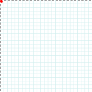
The default coordinate system
By default, the RVG coordinate system has its origin in the upper-left corner. The x-axis proceeds to the right. The y-axis proceeds downwards. The image on the left shows the axes of this coordinate system. I've added a light-blue "graph-paper" background to the example images to help associate the coordinate arguments to the actual locations in the image. Just remember that the axes and graph-paper background are not actually part of the image I'm producing.
The RVG class is one of the container classes defined by RVG. Container objects can contain graphic objects such as circles and lines, text, raster images, and other container objects. The outermost container is always an RVG object. I will add all the graphic objects that form the duck to this container.
Container constructors normally yield to a block. However,
here I've chained viewbox to new, so
viewbox takes responsibility for yielding and passes
the new instance of RVG to the canvas argument.
7 canvas.background_fill = 'white'
By default, RVG graphics are drawn on a transparent
background. This is convenient when you want to display your
image over another image. You can override the default background
color by assigning a color to the background_fill=
attribute. Here I set the background color to "white."
9 canvas.g.translate(100, 150).rotate(-30) do |body| 10 body.styles(:fill=>'yellow', :stroke=>'black', :stroke_width=>2) 11 body.ellipse(50, 30) 12 body.rect(45, 20, -20, -10).skewX(-35) 13 end
There's a lot going on in these few lines - seven method calls - so let's take it one method at a time.
Group is the second container class in RVG. The
purpose of a group is to associate a set of coordinate system
transformations and a set of styles with the graphic objects
within the group. To create a Group object within another
container, call the g method on the container. The
g method yields if a block is present. In this
example, there is no block associated with g, so
g returns the new group. The g method
adds the group to the content of its container. In this example,
the group's container is the canvas object created in line 6. The
graphic objects in the group are drawn as part of drawing the
container. The translate and rotate
chained to g modify the group by adding
coordinate system transforms.
(Okay, there is a block, but there are 2 method calls
between g and the block. I'll explain more
later.)
I'm going to use this group to contain the ellipse that forms
the duck's body and the rectangle that forms the wing. I could
just specify x- and y-coordinates to position these shapes
relative to the origin, but it's easier to move the origin to
where I want to draw the shapes. This is the purpose of the
translate method. This method moves the origin to
the (x,y) position specified by its arguments. I call
translate on the group object, and since the content
of the group gets the coordinate system transformations specified
for the group, the ellipse and the rectangle will be drawn on a
coordinate system with the origin at (100, 150) relative to the
old coordinate system.
Also, I want the duck's body to slant upward, so I use the
rotate method to rotate the axes. The argument to
rotate is the number of degrees of rotation. A
negative number indicates counter-clockwise rotation.
After translating and rotating the coordinate system, the axes look like this:
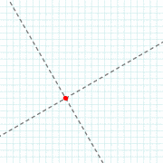
The transform methods
There are six transform methods. In addition to
translate and rotate, there's
scale, skewX, skewY,
and matrix. When groups are nested, any
transforms defined on the inner group(s) are added to the
outer transforms.
Recall that the styles method modifies the
default group styles. The styles method takes a hash
as an argument. The hash keys are style names, and the hash
values are, well, style values. In this example there are three
style names. The :fill style sets the fill color to 'yellow'. The
:stroke style sets the outline color to 'black'. The
:stroke_width style sets the width of the outline to 2. I want
the styles to apply to all objects within the group so in line 10
I call styles on the new group object.
The styles method is a real workhorse. It's
defined in almost every class in RVG and there are many other
style names in addition to these three..
The group contains two basic shapes, an ellipse and a
rectangle. I add the ellipse to the group with the
ellipse method. Ellipse has four
parameters. The first two, the radius on the x-axis and the
radius on the y-axis, are required. The last two are the (x,y)
coordinate of the center. When these are omitted, as here, they
default to (0,0). I add the rectangle with the rect
method, which also has four parameters. The first two are the
width and height of the rectangle. The last two are the (x,y)
coordinate of the upper-left corner. Both of these methods return
self, so you can chain other methods to them.
Here's what the group looks like when rendered. The ellipse is centered on the origin. The upper-left corner of the rectangle is slightly up and to the left of the origin.
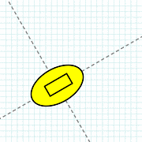
The shape methods
There are 7 shape methods. In addition to
ellipse and rect, there's
circle, line, path,
polygon, and polyline. You can also
think of text as a shape. Shapes are stroked and filled, and
can be modified by the transform methods and the
styles method.
Everybody knows that a wing doesn't look like a rectangle! A
wing looks like a slanted parallelogram. (Well, it does in this
example!) Fortunately, I can use the transform methods on shapes
as well as containers. The skewX method makes it
easy for us to give the rectangle a slant. The skewX
method is another transform. It takes a single argument, the
number of degrees to skew the x-axis. Since all the shape
constructors, including rect, return
self, I can chain skewX directly to
rect and limit the effect of the transform to just
the rectangle. The result looks like this. (I've drawn in the
axes for the wing coordinate system.)
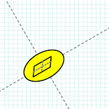
That's it for the body. Let's tie up one loose end before
moving on. I said earlier that container constructors (such as
g) yield to a block if present. In this case,
though, the translate and rotate
methods intervene between g and the block. All the
transform methods yield when there is an associated block, so I
can easily chain them to a container constructor and still use a
block argument to define the graphic objects in the group. Method
chaining is a common RVG idiom. You'll see it a lot in the
examples.
The next group draws the head.
15 canvas.g.translate(130, 83) do |head| 16 head.styles(:stroke=>'black', :stroke_width=>2) 17 head.circle(30).styles(:fill=>'yellow') 18 head.circle(5, 10, -5).styles(:fill=>'black') 19 head.polygon(30,0, 70,5, 30,10, 62,25, 23,20).styles(:fill=>'orange') 20 end
This section is very similar to the previous one. I'm defining a group to contain the graphic objects that draw the duck's head, eye, and beak. First I use the translate method to move the origin to (130,83):
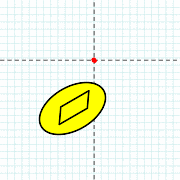
In line 16 I define the stroke and
stroke_width styles on the group. Styles defined on
the group propagate to shapes within the group unless you
override them. To do that, call styles on the
shapes. In this group each shape has its own fill color. The
yellow circle forms the head. The circle method
takes 3 parameters. The first parameter is the radius of the
circle. The other two parameters are the (x,y) coordinate of the
center. If omitted, as here, they default to (0,0). I use a small
black circle for the eye.
Last, I use the polygon method to draw the beak.
This method draws a polygon from a series of (x,y) coordinates.
If the last coordinate is not the same as the first,
polygon implicitly adds it to close the polygon.
Again, I use styles to set the fill color to
orange.
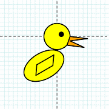
22 foot = RVG::Group.new do |_foot|
23 _foot.path('m0,0 v30 l30,10 l5,-10, l-5,-10 l-30,10z').
24 styles(:stroke_width=>2, :fill=>'orange', :stroke=>'black')
25 end
Here I create a group by directly calling new
instead of calling the g method on a container. This
creates a group object that is not contained within the canvas.
You might think of the foot as not being attached to anything,
like this:
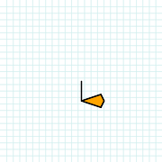
26 canvas.use(foot).translate(75, 188).rotate(15) 27 canvas.use(foot).translate(100, 185).rotate(-15)
To add the group to the canvas I use the use
method. The use method can accept any container or graphic object
as an argument. Optionally you can specify an (x,y) coordinate
that specifies where to position the objects. In this example,
however, I let those arguments default to (0,0) and use
translate to position the feet. Here's how the left
foot attaches to the duck:
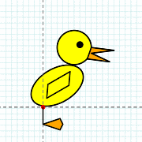
Of course, the duck is walking, so I have to give the foot a
little slant with rotate:
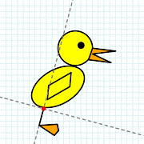
Attaching the right foot is easy. Call use again
but give different arguments to translate and
rotate:
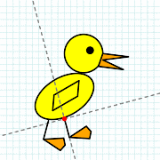
29 canvas.text(125, 30) do |title|
30 title.tspan("duck|").styles(:text_anchor=>'end', :font_size=>20,
31 :font_family=>'helvetica', :fill=>'black')
32 title.tspan("type").styles(:font_size=>22,
33 :font_family=>'times', :font_style=>'italic', :fill=>'red')
34 end
All I need now is a title for the picture. Text in RVG is a
job for the text method. Like the shape methods,
text can be used with any container object.
Text itself is a container, except that it can only
contain text-related objects. The text method takes
2 or 3 arguments, an (x,y) pair and optionally a string. The
(x,y) pair define a current text position at which
rendering starts. If there is a string argument, it will be
rendered starting at the current text position. Rendering text
changes the current text position to the end of the text.
In the example, text is used as a container. Text objects can contain Tspan objects. Each tspan can specify its own styles. By default each tspan is rendered starting at the current text position.
As usual, I can change the appearance of the text with
styles. Here I choose a font, a font style (the
default is "normal"), its size in points, and the color.
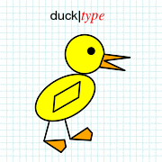
35 canvas.rect(249,249).styles(:stroke=>'blue', :fill=>'none')
I'm almost done. All I need to do it add a blue border. (I'm going to remove the graph paper background because we don't need it any more.)
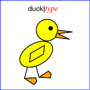
38 rvg.draw.write('duck.gif')
The draw method call doesn't occupy a lot of
space - just 4 letters - but does a lot of work. The
draw method goes through all the graphics objects
that I've added to the outermost RVG container and draws them on
the background. When the drawing is complete, draw
returns the drawing in the form of an RMagick Image object. You
can use any Image class methods on the drawing. Here I simply
write the image to a GIF file.
Are RVG images really scalable? Let's try. Change the RVG.new call to make an image that's 4 times as big. That's 5 inches on a side:
6 rvg = RVG.new(5.in, 5.in).viewbox(0,0,250,250) do |canvas|
Change nothing else. Run the program again and see what you get.
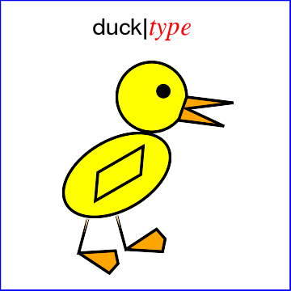